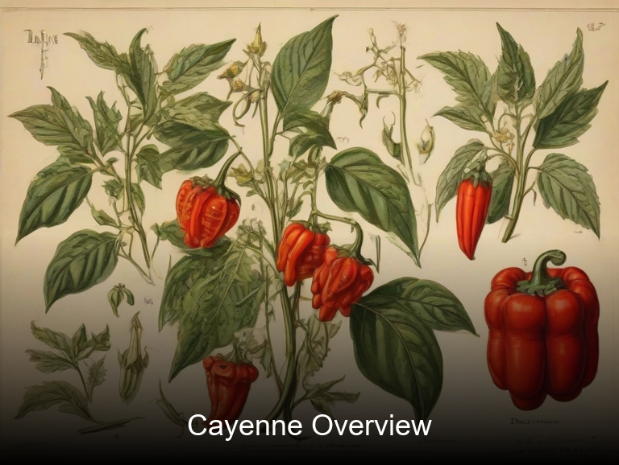
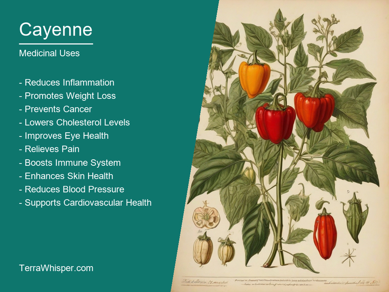
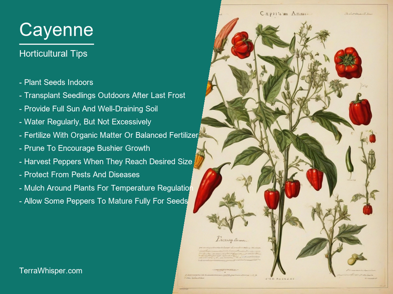
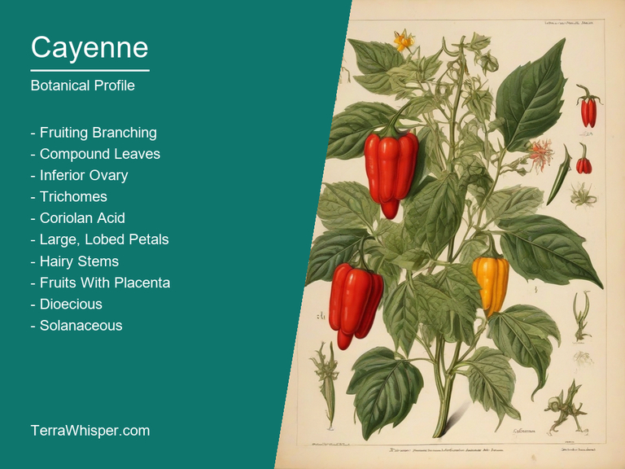
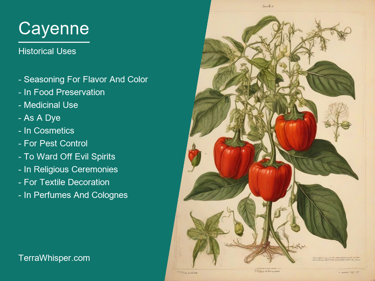

Cayenne, scientifically know as Capsicum annuum, is a popular spice used in various cuisines around the world for its pungent flavor. Its active ingredient, capsaicin, is responsible for this distinctive taste and has also been utilized in traditional medicine to alleviate pain, lower blood pressure, and aid digestion. Additionally, cayenne peppers are rich in vitamins A, C, and E, as well as antioxidants that can help boost the immune system.
In terms of horticultural and ornamental aspects, cayenne plants are relatively easy to grow and thrive in both containers and gardens. They usually exhibit vibrant red fruits that ripen throughout the growing season. As ornamental plants, they add a touch of color and visual interest to landscapes with their attractive leaves and eye-catching peppers.
Botanically speaking, cayenne belongs to the nightshade family (Solanaceae), sharing common characteristics with other members such as tomatoes, potatoes, and eggplants. Historically, it has been cultivated for thousands of years, dating back to ancient civilizations like the Aztecs and Mayans who valued it not only for its culinary uses but also for medicinal purposes. Today, cayenne continues to be an important ingredient in various cultural cuisines worldwide.
Cayenne, scientifically known as Capsicum annuum, is a versatile plant with numerous applications both in the kitchen and beyond. As a culinary staple, it adds heat and flavor to dishes from around the globe. The active compound capsaicin not only gives cayenne its characteristic spicy taste but also has potential health benefits, including pain relief and improved digestion.
From a horticultural perspective, cayenne plants are relatively easy to grow and maintain. They can be cultivated in various climates and conditions, making them suitable for both indoor and outdoor gardening enthusiasts. Furthermore, these plants provide visual appeal through their attractive foliage and colorful fruits that ripen throughout the growing season.
Botanically speaking, cayenne belongs to the Solanaceae family, which also encompasses other well-known plants such as tomatoes, potatoes, and eggplants. Historically, cayenne has played an essential role in many cultures, particularly those of Mesoamerica where it was highly valued for both its culinary uses and medicinal properties. Its popularity continues today as chefs and home cooks alike continue to utilize this spicy pepper to enhance the flavors of their dishes.
In this article, you will discover what are the medicinal and culinary uses of cayenne. Then, you'll learn how to cultivate it, what is its botanical profile, and how it was used historically.
The cayenne pepper is an herb that belongs to the nightshade family of Solanaceae, scientifically named Capsicum annuum. This plant has been traditionally used for medicinal purpose over centuries and its health benefits are well documented.
The following illustration lists the most important uses of cayenne in medicine.

The medicinal constituents found in this herb include capsaicin (9-methyl-11-nonenamide), which is the main active component responsible for its therapeutic effects, along with other compounds such as flavonoids, carotenoids, and vitamin C.
The most commonly used parts of the cayenne pepper plant for medicinal purposes are its fruits or peppers. These peppers can be taken raw, dried, grounded into powder, or made into capsules, tablets, or tinctures.
Cayenne has a long history of use in traditional medicine to treat various health conditions such as pain relief, digestive problems, heart disease, and high blood pressure among others. The active compound capsaicin is responsible for its ability to alleviate pain by acting on nerve endings and reducing the sensation of pain. Additionally, cayenne has been shown to improve circulation, boost metabolism, and aid in weight loss.
Although cayenne pepper is generally safe for consumption when used appropriately, it may cause some side effects such as burning or irritation of the mouth, throat, stomach, or intestines especially when consumed in large amounts. It can also interfere with certain medications like blood thinners and antacids.
It's important to take precautions while using cayenne pepper for medicinal purposes. Pregnant women, breastfeeding mothers, and those with digestive problems or ulcers should consult their healthcare providers before using it. Furthermore, individuals who are allergic to nightshade family plants should avoid using this herb.
Cayenne is a popular culinary ingredient used to add heat and flavor to various dishes. It is widely utilized in different cuisines, including Mexican, Indian, Thai, and Cajun food. The spicy chili pepper can be used fresh or dried, with the dried version often called ground red pepper or paprika. In addition to its use as a seasoning, cayenne is also employed in sauces and pickling.
The following illustration lists the most common uses of cayenne for culinary purposes.
The flavor profile of cayenne is characterized by its intense heat, which ranges from medium to extremely hot depending on the variety. Its taste can be described as spicy, pungent, and slightly fruity, with a hint of smokiness. Cayenne adds both taste and aroma to dishes, making it an essential ingredient in many recipes.
The edible parts of cayenne include the pod (also known as the chili), seeds, and sometimes even the leaves. The pod is typically used fresh or dried for culinary purposes, while the seeds are commonly removed before consumption due to their intense heat. However, some people choose to eat them whole for an extra kick.
Culinary tips when using cayenne involve proper handling and storage. Always wear gloves when handling fresh cayennes to avoid irritation from the oils on the skin. When storing dried cayenne, keep it in a cool, dark place away from sunlight. Ground cayenne can be mixed with other spices such as garlic powder or coriander to create unique blends for various dishes.
While cayenne adds flavor and heat to many dishes, excessive consumption may lead to potential side effects and toxicity. Symptoms of overconsumption include burning sensation in the mouth, throat irritation, stomach upset, diarrhea, and even nausea. In severe cases, prolonged exposure to capsaicin (the active compound in cayenne) can cause respiratory problems or skin irritation. It is essential to use cayenne sparingly and with caution, especially for those sensitive to spicy foods.
Growing Cayenne is a simple process. Plant the seeds or transplant seedlings into well-draining soil with a pH level between 6.0 and 7.0. Space the plants at least 30 cm apart to allow for proper air circulation and sunlight exposure. Water regularly, ensuring that the top layer of soil remains moist but not waterlogged.
The following illustration lists the most important tips to cutlitvate cayenne.

Cayenne thrives in full sun, so position it accordingly. The ideal growing conditions consist of temperatures ranging between 18-30°C during the day and above 15°C at night. The plant will require approximately 6 hours of sunlight daily to produce abundant fruit. Make sure there's sufficient airflow around the plants to prevent disease, such as aphids or fungal infections.
To maintain healthy cayenne plants, regularly check for signs of pests and diseases. Prune any dead or damaged leaves to encourage growth and remove flowers that have already been pollinated to focus energy on producing more fruit. Apply organic fertilizers every few weeks during the growing season to provide essential nutrients like nitrogen, phosphorus, and potassium. Keep an eye on the moisture levels in the soil and adjust watering accordingly. With proper care, your cayenne plants will reward you with a bountiful harvest of spicy peppers.
Cayenne, with botanical name Capsicum annuum, belongs to the domain Eukarya, kingdom Plantae, phylum Tracheophyta, class Magnoliopsida, order Solanales, family Solanaceae, genus Capsicum, and species annuum. Common names include cayenne pepper, bird pepper, cow-horn pepper, ajonjoli (Spanish), and guinea spice.
The following illustration display the botanical profile of cayenne.

Cayenne is an annual herbaceous plant that can grow up to two feet tall. Its leaves are ovate or lanceolate, simple, alternate, and have serrated margins. The flowers are usually white or yellow, with a tubular shape and five petals. The fruit is a berry that starts green and turns red as it ripens.
Variants of Capsicum annuum include Jalapeño, Poblano, Habanero, Serrano, Anaheim, and Bell Peppers. These variants differ mainly in size, shape, color, heat level (measured by Scoville units), and use. For instance, Jalapeño peppers are medium-sized, conical, green or red when ripe, moderate spiciness used mainly for culinary purposes.
Cayenne originates from Central and South America, specifically Mexico and the Amazon Basin. It has since spread worldwide due to its use as a food seasoning and medicinal plant. Natural habitats include tropical and subtropical regions with well-drained soils and full sun exposure.
The life cycle of Capsicum annuum is annual, meaning it completes its entire lifespan in one growing season. Starting from seed germination in spring to maturity in fall when fruits are harvested. Growth includes vegetative phase (leaf formation), reproductive phase (flowering and fruiting). The plant is self-pollinating, ensuring the production of seeds for the next generation.
As one of the oldest and most versatile spices known to mankind, Cayenne pepper or red pepper (Capsicum annuum) has played an essential role in the culinary traditions, religious ceremonies, and traditional medicine across different civilizations around the world. Its historical significance can be traced back to ancient times, with roots deeply embedded in Mesoamerican cultures such as the Aztecs and Mayans who used it for various purposes.
The following illustration lists the most well known historical uses of cayenne.

Cayenne pepper has been a significant part of traditional medicine since ancient civilizations discovered its medicinal properties. In the indigenous cultures of Mesoamerica, it was utilized for pain relief, treating colds, sore throats, digestive issues, and even for dental surgery. The spicy chili peppers contain capsaicin, a compound with powerful anti-inflammatory and analgesic effects that effectively treat conditions such as arthritis and neuropathic pain.
Moreover, the red pepper was also used in divination rituals among various cultures worldwide. For instance, ancient Romans believed that cayenne peppers could predict the future by observing how they burned when thrown into a fire. The size and intensity of the flames were thought to reveal important information about upcoming events or personal relationships. Similarly, in Africa, tribal societies incorporated this spice into their spiritual practices as part of ceremonies and rituals meant to communicate with ancestors or spirits.
Finally, several legends surround the origin and use of cayenne peppers throughout history. One such legend dates back to the Aztec civilization where it is said that the god Quetzalcoatl brought the first chili pepper plant from paradise to earth. Another popular tale tells of Christopher Columbus discovering this spice during his voyage across the Atlantic Ocean, which eventually led to its widespread adoption in European cuisine and medicine.